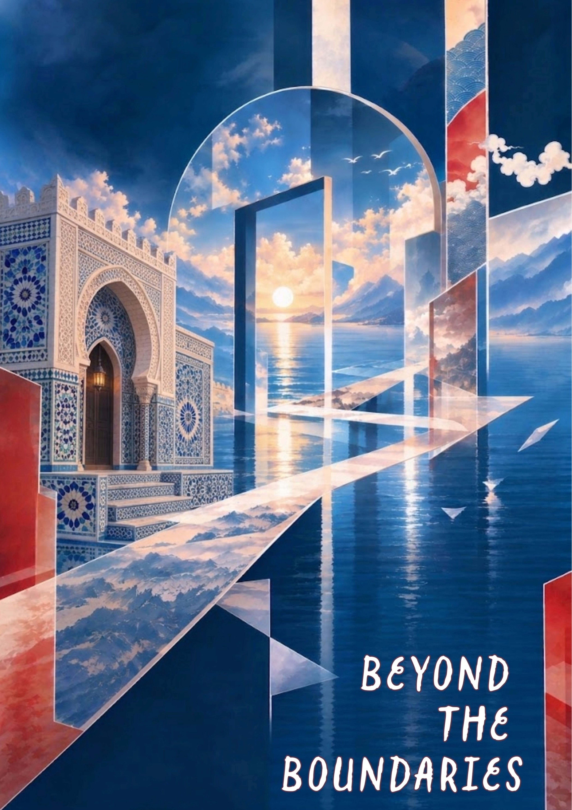
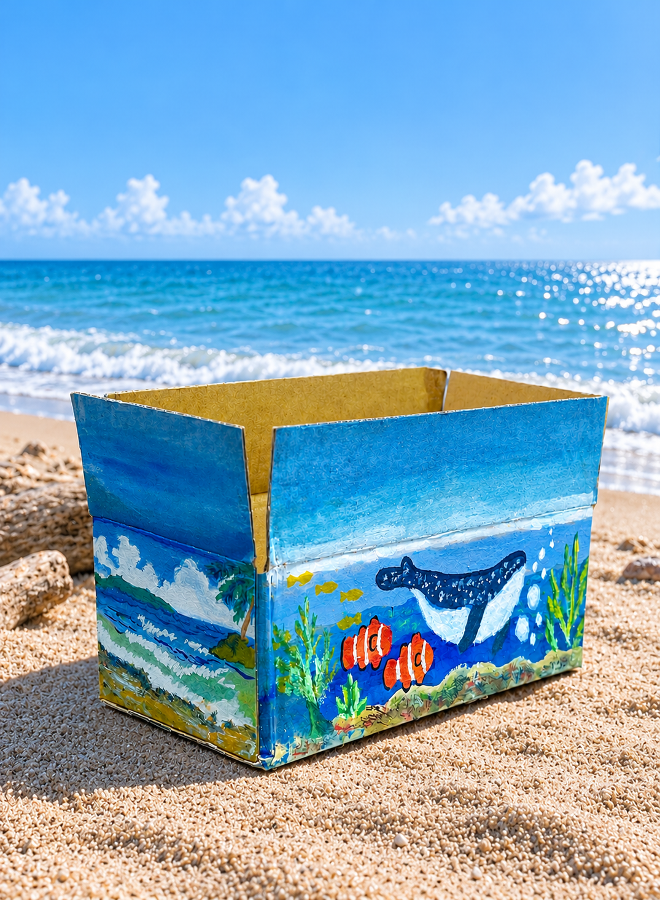
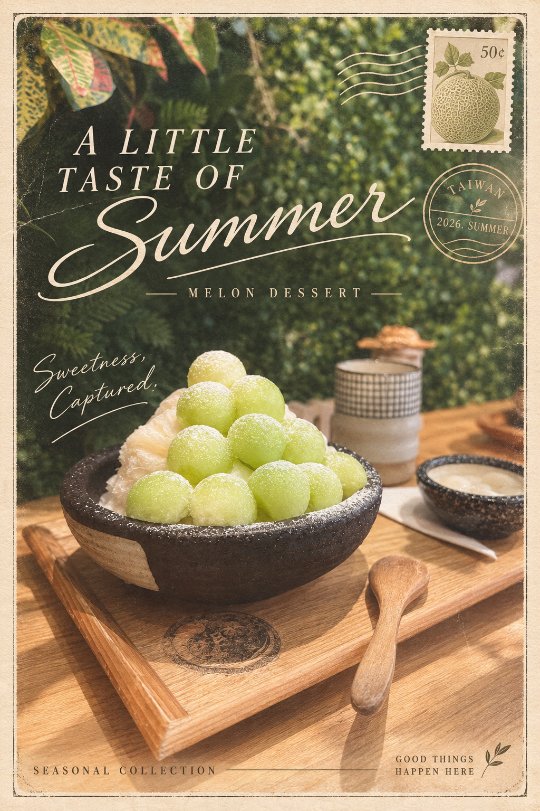
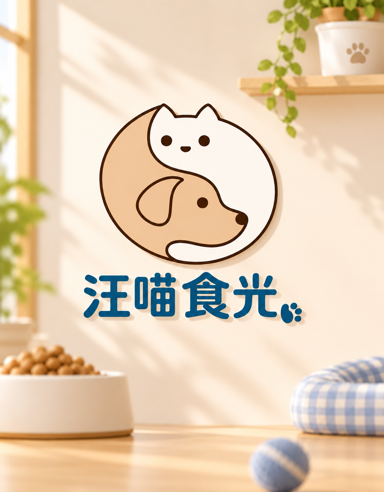

PERSONAL INFO
個人資料
- 姓名
- SHIANG WEI
- 性別
- 男
- 生日
- 2006年
- 地址
- 高雄市
01 / ABOUT ME
我是SHIANG WEI，目前就讀於南臺科技大學、視覺傳達設計系三年級。
我喜歡透過影像、色彩與排版探索不同的視覺可能性，整理成自己的視覺語言。
我希望將日常的觀察轉化為獨特的視覺作品，持續嘗試、不斷進步。
02 / RESUME
累積設計觀察與表達經驗
PERSONAL INFO
EDUCATION
視覺傳達設計系
三年級
在學中
EXPERIENCE
03 / SELECTED WORKS
每一次探索都有新發現




04 / DESIGN PHILOSOPHY
讓平凡的事物
產生新的意義
我希望每個設計都能做有效的表達。
透過觀察、探索、嘗試，讓想法被看見。

05 / CONTACT

感謝你瀏覽我的個人網站
歡迎與我聯繫